소방설비산업기사(기계) (2018-09-15 기출문제)
1과목: 소방원론
1. 소화에 대한 설명 중 틀린 것은?
- 질식소화에 필요한 산소농도는 가연물과 소화약제의 종류에 따라 다르다.
- 억제소화는 자유활성기(free radical)에 의한 연쇄반응을 차단하는 물리적인 소화방법이다.
- 액체 이산화탄소나 할론의 냉각소화효과는 물보다 아주 작다.
- 화염을 금속망이나 소결금속 등의 미세한 구멍으로 통과시켜 소화하는 화염방지기(flame arrester)는 냉각소화를 이용한 안전장치이다.
(정답률: 52%)

2. 제1류 위험물 중 과산화나트륨의 화재에 가장 적합한 소화방법은?
- 다량의 물에 의한 소화
- 마른 모래에 의한 소화
- 포소화기에 의한 소화
- 분무상의 주수소화
(정답률: 73%)
3. 제3류 위험물로 금수성 물질에 해당하는 것은?
- 탄화칼슘
- 유황
- 황린
- 이황화탄소
(정답률: 55%)
4. 가연성물질 종류에 따른 연소생성가스의 연결이 틀린 것은?
- 탄화수소류 - 이산화탄소
- 셀룰로이드 - 질소산화물
- PVC - 암모니아
- 레이온 – 아크릴로레인
(정답률: 68%)
5. 실 상부에 배연기를 설치하여 연기를 옥외로 배출하고 급기는 자연적으로 하는 제연방식은?
- 제2종 기계제연방식
- 제3종 기계제연방식
- 스모크타워 제연방식
- 제1종 기계제연방식
(정답률: 54%)
6. 실내에 화재가 발생하였을 때 그 실내의 환경변화에 대한 설명 중 틀린 것은?
- 압력이 내려간다.
- 산소의 농도가 감소한다.
- 일산화탄소가 증가한다.
- 이산화탄소가 증가한다.
(정답률: 78%)
7. 연소범위에 대한 설명으로 틀린 것은?
- 연소범위에는 상한과 하한이 있다.
- 연소범위의 값은 공기와 혼합된 가연성 기체의 체적농도로 표시된다.
- 연소범위의 값은 압력과 무관하다.
- 연소범위는 가연성 기체의 종류에 따라 다른 값을 갖는다.
(정답률: 77%)
8. 실험군 쥐를 15분 동안 노출시켰을 때 실험군의 절반이 사망하는 치사 농도은?
- ODP
- GWP
- NOAEL
- ALC
(정답률: 64%)
9. 출화의 시기를 나타낸 것 중 옥외출화에 해당하는 것은?
- 목재사용 가옥에서는 벽, 추녀밑의 판자나 목재에 발염착화한 때
- 불연 벽체나 칸막이 및 불연 천정인 경우 실내에서는 그 뒷판에 발염착화한 때
- 보통가옥 구조시에는 천정판의 발염착화한 때
- 천정 속, 벽 속 등에서 발염착화한 때
(정답률: 61%)
10. 제4류 위험물을 취급하는 위험물제조소에 설치하는 게시판의 주의사항으로 옳은 것은?
- 화기엄금
- 물기주의
- 화기주의
- 충격주의
(정답률: 80%)
11. 위험물의 종류에 따른 저장방법 설명 중 틀린 것은?
- 칼륨 – 경유 속에 저장
- 아세트알데히드 – 구리 용기에 저장
- 이황화탄소 – 물 속에 저장
- 황린 – 물 속에 저장
(정답률: 61%)
12. 다음 중에서 전기음성도가 가장 큰 원소는?
- B
- Na
- O
- Cl
(정답률: 56%)
13. 분말 소화약제 원시료의 중량 50g을 12시간 건조한 후 중량을 측정하였더니 49.95g이고, 24시간 건조한 후 중량을 측정하였더니 49.90g이었다. 수분함수율은 몇 %인가?
- 0.1
- 0.15
- 0.2
- 0.25
(정답률: 42%)
14. 고비점 유류의 화재에 적응성이 있는 소화설비는?
- 옥내소화전설비
- 옥외소화전설비
- 미분무설비
- 연결송수관 설비
(정답률: 74%)
15. 전기화재의 발생 원인이 아닌 것은?
- 누전
- 합선
- 과전류
- 마찰
(정답률: 75%)
16. 사염화탄소를 소화약제로 사용하지 않는 이유에 대한 설명 중 옳은 것은?
- 폭발의 위험성이 있기 때문에
- 유독가스의 발생 위험이 있기 때문에
- 전기 전도성이 있기 때문에
- 공기보다 비중이 작기 때문에
(정답률: 75%)
17. 이산화탄소 소화약제를 방출하였을 때 방호구역 내에서 산소농도가 18 vol%가 되기 위한 이산화탄소의 농도는 약 몇 vol%인가?
- 3
- 7
- 6
- 14
(정답률: 64%)
18. 프로판 가스의 공기 중 폭발범위는 약 몇 vol%인가?
- 2.1 ~ 9.5
- 15 ~ 25.5
- 20.5 ~ 32.1
- 33.1 ~ 63.5
(정답률: 74%)
19. 화재하중에 주된 영향을 주는 것은?
- 가연물의 온도
- 가연물의 색상
- 가연물의 양
- 가연물의 융점
(정답률: 72%)
20. 실내 화재 시 연기의 이동과 관련이 없는 것은?
- 건물 내·외부의 온도차
- 공기의 팽창
- 공기의 밀도차
- 공기의 모세관 현상
(정답률: 72%)
2과목: 소방유체역학
21. 비중이 0.88인 벤젠에 안지름 1mm의 유리관을 세웠더니 벤젠이 유리관을 따라 9.8mm를 올라갔다. 유리와의 접촉각이 0°라 하면 벤젠의 표면장력은 몇 N/m인가?
- 0.021
- 0.042
- 0.084
- 0.128
(정답률: 44%)
22. 반지름 R인 원관에서의 물의 속도분포가 u = u0[1-(r/R)2]과 같을 때, 벽면에서의 전단응력의 크기는 얼마인가?
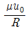
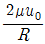
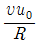
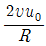
(정답률: 49%)
23. 유체역학적 관점으로 말하는 이상유체에 관한 설명으로 가장 옳은 것은?
- 점성으로 인해 마찰손실이 생기는 유체
- 높은 압력을 가하면 밀도가 상승하는 유체
- 유체에 압력을 가하면 체적이 줄어드는 유체
- 압력을 가해도 밀도변화가 없으며 점성에 의한 마찰손실도 없는 유체
(정답률: 68%)
24. 지름이 13mm인 옥내소화전 노즐에서 10분간 방사된 물이 양이 1.7m3이었다면 노즐의 방사압력(계기압력)은 몇 kPa인가?
- 17
- 27
- 228
- 456
(정답률: 46%)
25. 수평하수도관에 1/2만 물이 차 있다. 관의 안지름이 1m, 길이가 3m인 하수도관 내 물과 접촉하는 곡면에서 받는 합력의 수직방향(중력방향)성분은 몇 kN인가? (단, 대기압의 효과는 무시한다.)
- 11.55
- 23.09
- 46.18
- 92.36
(정답률: 29%)
26. 배관 내에서 물의 수격작용(water hammer)을 방지하는 대책으로 잘못된 것은?
- 조압 수조(surge tank)를 관로에 설치한다.
- 밸브를 펌프 송출구에서 멀게 설치한다.
- 밸브를 서서히 조작한다.
- 관경을 크게 하고 유속을 작게 한다.
(정답률: 61%)
27. 지름 10cm의 원형노즐에서 물이 50m/s의 속도로 분출되어 벽에 수직으로 충돌할 때 벽이 받는 힘의 크기는 약 몇 kN인가?
- 19.6
- 33.9
- 57.1
- 79.3
(정답률: 37%)
28. 온도와 압력이 각각 15℃, 101.3kPa이고 밀도 1.225kg/m3인 공기가 흐르는 관로 속에 U자관 액주계를 설치하여 유속을 측정하였더니 수은주 높이 차이가 250mm이었다. 이 때 공기는 비압축성 유동이라고 가정할 때 공기의 유속은 약 몇 m/s인가? (단, 수은의 비중은 13.6이다.)
- 174
- 233
- 296
- 355
(정답률: 38%)
29. 일반적으로 원심펌프의 특성 곡선은 3가지로 나타내는데 이에 속하지 않는 것은?
- 유량과 전양정의 관계를 나타내는 전양정 곡선
- 유량과 축동력의 관계를 나타내는 축동력 곡선
- 유량과 펌프효율의 관계를 나타내는 효율 곡선
- 유량과 회전수의 관계를 나타내는 회전수 곡선
(정답률: 42%)
30. 단면적이 0.1m2에서 0.5m2로 급격히 확대되는 관로에 0.5m3/s의 물이 흐를 때 급확대에 의한 손실수두는 약 몇 m 인가? (단, 급확대에 의한 부차적 손실계수는 0.64이다.)
- 0.82
- 0.99
- 1.21
- 1.45
(정답률: 34%)
31. 지름이 10cm인 원통에 물이 담겨있다. 중심축에 대하여 300rpm의 속도로 원통을 회전시켰을 때 수면의 최고점과 최저점이 높이 차는 몇 cm인가?
- 8.5
- 10.2
- 11.4
- 12.6
(정답률: 24%)
32. 카르노 사이클에 대한 설명 중 틀린 것은?
- 열효율은 온도만의 함수로 구성된다.
- 두 개의 등온과정과 두 개의 단열과정으로 구성된다.
- 최고온도와 최저온도가 같을 때 비가역사이클보다는 카르노 사이클의 효율이 반드시 높다.
- 작동유체의 밀도에 따라 열효율은 변한다.
(정답률: 29%)
33. 노즐 내의 유체의 질량 유량을 0.06kg/s, 출구에서의 비체적을 7.8m3/kg, 출구에서의 평균 속도를 80m/s라고 하면, 노즐 출구의 단면적은 약 몇 cm2인가?
- 88.5
- 78.5
- 68.5
- 58.5
(정답률: 34%)
34. 복사 열전달에 대한 설명 중 올바른 것은?
- 방출되는 복사열은 복사되는 면적에 반비례한다.
- 방출되는 복사열은 방사율이 작을수록 커진다.
- 방출되는 복사열은 절대온도의 4승에 비례한다.
- 완전흑체의 경우 방사율은 0이다.
(정답률: 65%)
35. 이상기체의 폴리트로픽 변화 PVn = C에서 n이 대상 기체의 비열비(ratio of specific heat)인 경우는 어떤 변화인가? (단, P는 압력, V는 부피, C는 상수(Constant)를 나타낸다.)
- 단열변화
- 등온변화
- 정적변화
- 정압변화
(정답률: 41%)
36. 20℃의 물이 안지름 2cm인 원관 속을 흐르고 있는 경우 평균 속도는 약 몇 m/s 인가? (단, 레이놀즈수는 2100, 동점성계수는 1.006×10-6m2/s이다.)
- 0.106
- 1.067
- 2.003
- 0.703
(정답률: 47%)
37. 다음 중 금속의 탄성변형을 이용하여 기계적으로 압력을 측정할 수 있는 것은?
- 부르돈관 압력계
- 수은 기압계
- 맥라우드 진공계
- 마니미터 압력계
(정답률: 56%)
38. 지름 6cm, 길이 15m, 관마찰계수 0.025인 수평원관 속을 물이 난류로 흐를 때 관 출구와 입구의 압력차가 9810pa 이면 유량은 약 몇 m3/s 인가?
- 5.0
- 5.0 × 10-3
- 0.5
- 0.5 × 10-3
(정답률: 52%)
39. 펌프 동력과 관계된 용어의 정의에서 펌프에 의해 우체에 공급되는 동력을 무엇이라고 하는가?
- 축동력
- 수동력
- 전체동력
- 원동기 동력
(정답률: 41%)
40. 피스톤 내의 기체 0.5kg을 압축하는데 15kJ의 열량이 가해졌다. 이때 12kJ의 열이 피스톤 밖으로 빠져나갔다면 내부에너지의 변화는 약 몇 kJ인가?
- 27
- 13.5
- 3
- 1.5
(정답률: 44%)
3과목: 소방관계법규
41. 화재예방, 소방시설 설치·유지 및 안전관리에 관한 법령에 따른 특정소방대상물의 연소방지설비 설치면제 기준 중 다음 ( )안에 해당하지 않는 소방시설은?
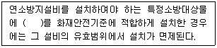
- 스프링클러설비
- 강화액소화설비
- 물분무소화설비
- 미분무소화설비
(정답률: 40%)
42. 위험물안전관리법령에 따른 위험물의 유별 저장·취급의 공통기준 중 다음 ( )안에 알맞은 것은?
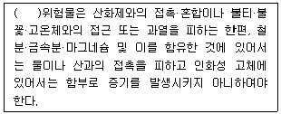
- 제1류
- 제2류
- 제3류
- 제4류
(정답률: 46%)
43. 위험물안전관리법령에 따른 다수의 제조소등을 설치한 자가 1인의 안전관리자를 중복하여 선임할 수 있는 경우의 기준 중 다음 ( ) 안에 알맞은 것은? (단, 아래의 기준에 모두 적합한 5개 이하의 제조소등을 동일인이 설치한 경우이다.)
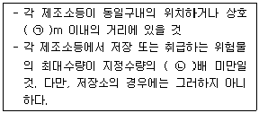
- ㉠ 100, ㉡ 3000
- ㉠ 300, ㉡ 3000
- ㉠ 100, ㉡ 1000
- ㉠ 300, ㉡ 1000
(정답률: 59%)
44. 화재예방, 소방시설 설치·유지 및 안전관리에 관한 법령에 따른 특정소방대상물 중 운동시설의 용도로 사용하는 바닥면적의 합계가 50m2일 때 수용인원은? (단, 관람석이 없으며 복도, 계단 및 화장실의 바닥면적은 포함되지 않은 경우이다.)
- 8명
- 11명
- 17명
- 26명
(정답률: 53%)
45. 화재예방, 소방시설 설치·유지 및 안전관리에 관한 법령에 따른 펌프공장의 작업장, 음료수 공장의 충전을 하는 작업장 등과 같이 화재안전기준을 적용하기 어려운 특정소방대상물의 설치하지 아니할 수 있는 소방시설의 종류가 아닌 것은?
- 상수도소화용수설비
- 스프링클러설비
- 연결살수설비
- 연결송수관설비
(정답률: 48%)
46. 소방시설공사업법에 따른 소방기술 인정 자격수첩 또는 소방기술자 경력수첩의 기준 중 다음 ( )안에 알맞은 것은? (단, 소방기술자 업무에 영향을 미치지 아니하는 범위에서 근무시간 외에 소방시설업이 아닌 다른 업종에 종사하는 경우는 제외한다.)
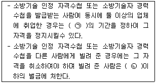
- ㉠ 6개월 이상 1년 이하, ㉡ 200만원
- ㉠ 6개월 이상 1년 이하, ㉡ 300만원
- ㉠ 6개월 이상 2년 이하, ㉡ 200만원
- ㉠ 6개월 이상 2년 이하, ㉡ 300만원
(정답률: 43%)
47. 소방시설공사업령에 따른 완공검사를 위한 현장확인 대상 특정소방대상물의 범위 기준 중 틀린 것은?(오류 신고가 접수된 문제입니다. 반드시 정답과 해설을 확인하시기 바랍니다.)
- 연면적 10000m2 이상이거나 11층 이상인 특정소방대상물(아파트는 제외)
- 가연성 가스를 제조·저장 또는 취급하는 시설 중 지상에 노출된 가연성가스탱크의 저장 용량 합계가 1000톤 이상인 시설
- 가스계(이산화탄소·할로겐화합물·청정소화약제)소화설비(호스릴소화설비는 포함)가 설치된 것
- 문화 및 집회시설, 종교시설, 판매시설, 노유자시설, 수련시설, 운동시설, 숙박시설, 창고시설, 지하상가
(정답률: 52%)
48. 소방기본법령에 따른 특수가연물의 기준 중 다음 ( )안에 알맞은 것은?
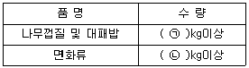
- ㉠ 200, ㉡ 400
- ㉠ 200, ㉡ 1000
- ㉠ 400, ㉡ 200
- ㉠ 400, ㉡ 1000
(정답률: 62%)
49. 소방기본법령에 따른 화재조사에 관한 전문교육 기준 중 다음 ( )안에 알맞은 것은?
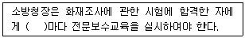
- 3개월
- 6개월
- 1년
- 2년
(정답률: 58%)
50. 화재예방, 소방시설 설치·유지 및 안전관리에 관한 법령에 따른 비상방송설비를 설치하여야 하는 특정소방대상물의 기준 중 틀린 것은? (단, 위험물 저장 및 처리시설 중 가스시설, 사람이 거주하지 않는 동물 및 식물 관련시설, 지하가 중 터널, 축사 및 지하구는 제외한다.)
- 연면적 3500m2 이상인 것
- 연면적 1000m2 미만의 기숙사
- 지하츠의 층수가 3층 이상인 것
- 지하층을 제외한 층수가 11층 이상인 것
(정답률: 50%)
51. 화재예방, 소방시설 설치·유지 및 안전관리에 관한 법령에 따른 소방시설등의 자체점검시 점검인력 1단위가 하루 동안 점검할 수 있는 특정소방대상물의 연면적 기준 중 다음 ( )안에 알맞은 것은?
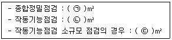
- ㉠ 10000, ㉡ 12000, ㉢ 3500
- ㉠ 13000, ㉡ 15500, ㉢ 7000
- ㉠ 12000, ㉡ 10000, ㉢ 3500
- ㉠ 15500, ㉡ 13000, ㉢ 7000
(정답률: 61%)
52. 위험물안전관리법에 따른 정기검사와 대상인 제조소등의 기준 중 다음 ( )안에 알맞은 것은?
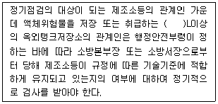
- 50만
- 100만
- 150만
- 200만
(정답률: 32%)
53. 소방기본법에 따른 출동한 소방대의 소방장비를 파손하거나 그 효용을 해하여 화재진압·인명구조 또는 구급활동을 방해하는 행위를 한 사람에 대한 벌칙기준은?
- 5년 이하의 징역 또는 5000만원 이하의 벌금
- 5년 이하의 징역 또는 3000만원 이하의 벌금
- 3년 이하의 징역 또는 3000만원 이하의 벌금
- 3년 이하의 징역 또는 1500만원 이하의 벌금
(정답률: 51%)
54. 위험물안전관리법령에 따른 소방청장, 시·도지사, 소방본부장 또는 소방서장이 한국 소방산업기술원에 위탁할 수 있는 업무의 기준 중 틀린 것은?
- 시·도지사의 탱크안전성능검사 중 암반탱크에 대한 탱크안전성능검사
- 시·도지사의 탱크안전성능검사 중 용량이 100만L 이상인 액체위험물을 저장하는 탱크에 대한 탱크안전성능검사
- 시·도지사의 완공검사에 관한 권한 중 저장용량이 30만L 이상인 옥외탱크저장소 또는 암반탱크저장소의 설치 또는 변경에 따른 완공검사
- 시·도자시의 완공검사에 관한 권한 중 지정수량 3000배 이상의 위험물을 취급하는 제조소 또는 일반취급소의 설치 또는 변경(사용중인 제조소 또는 일반취급소의 보수 또는 부분적인 증설은 제외)에 따른 완공검사
(정답률: 48%)
55. 소방기본법에 따른 공동주택에 소방자동차전용구역에 차를 주차하거나 전용구역에의 진입을 가로막는 등의 방해행위를 한 자에게는 몇 만원 이하의 과태료를 부과하는가?
- 20만원
- 100만원
- 200만원
- 300만원
(정답률: 44%)
56. 화재예방, 소방시설 설치·유지 및 안전관리에 관한 법에 따른 소방시설관리업자가 사망한 경우 그 상속인이 소방시설관리업자의 지위를 승계한 자는 누구에게 신고하여야 하는가?
- 소방청장
- 시·도지사
- 소방본부장
- 소방서장
(정답률: 70%)
57. 위험물안전관리법려에 따른 지정수량의 10배 이상의 위험물을 저장 또는 취급하는 제조소등(이동탱크저장소를 제외)에 화재발생 시 이를 알릴 수 있는 경보설비의 종류가 아닌 것은?
- 확성장치(휴대용확성기 포함)
- 비상방송설비
- 자동화재속보설비
- 자동화재탐지설비
(정답률: 35%)
58. 화재예방, 소방시설 설치·유지 및 안전관리에 관한 법령에 따른 임시소방시설 중 비상경보장치를 설치하여야 하는 공사의 작업현장의 규모의 기준 중 다음 ( )안에 알맞은 것은?
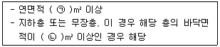
- ㉠ 400, ㉡ 150
- ㉠ 400, ㉡ 600
- ㉠ 600, ㉡ 150
- ㉠ 600, ㉡ 600
(정답률: 49%)
59. 화재예방, 소방시설 설치·유지 및 안전관리에 관한 법령에 따른 건축허가등의 동의대상물의 범위 기준 중 틀린 것은?
- 건축등을 하려는 학교시설 : 연면적 200m2이상
- 노유자 시설 : 연면적 200m2이상
- 정신의료기관(입원실이 없는 정신건강의학과 의원은 제외) : 연면적 300m2이상
- 장애인 의료재활시설 : 연면적 300m2이상
(정답률: 49%)
60. 소방기본법령상에 따른 급수탑 및 지상에 설치하는 소화전·저수조의 경우 소방용수표시 기준 중 다음 ( )안에 알맞은 것은?
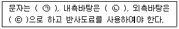
- ㉠ 검은색, ㉡ 청색, ㉢ 적색
- ㉠ 검은색, ㉡ 적색, ㉢ 청색
- ㉠ 백색, ㉡ 청색, ㉢ 적색
- ㉠ 백색, ㉡ 적색, ㉢ 청색
(정답률: 51%)
4과목: 소방기계시설의 구조 및 원리
61. 스프링클럽설비의 수평주행배관에서 연결된 교차배관의 총 길이가 18m이다. 배관에 설치되는 행가의 최소수량으로 옳은 것은?
- 1개
- 2개
- 3개
- 4개
(정답률: 60%)
62. 소화기구의 소화약제벌 적응성 기준 중 A급 화재에 적응성을 가지는 소화약제가 아닌 것은?
- 인산염류소화약제
- 중탄산염류소화약제
- 산알칼리소화약제
- 고체에어로졸화합물
(정답률: 45%)
63. 포소화약제의 혼합장치 중 펌프의 토출관과 흡입관 사이의 배관도중에 설치한 흡입기에 펌프에서 토출된 물의 일부를 보내고, 농도조절밸브에서 조정된 포소화약제의 필요량을 포소화약제 탱크에서 펌프 흡입측으로 보내어 이를 혼합하는 방식은?
- 펌프 푸로포셔너 방식
- 프레져 프로포셔너 방식
- 라인 푸로포셔너 방식
- 프레져 사이드 푸로포셔너 방식
(정답률: 53%)
64. 물분무소화설비의 물분무헤드를 설치하지 아니할 수 있는 기준 중 다음 ( )안에 알맞은 것은?
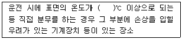
- 79
- 121
- 162
- 260
(정답률: 52%)
65. 스프링클러설비의 종류에 따른 밸브 및 헤드의 연결이 옳은 것은? (단, 설비의 종류 – 밸브 – 헤드의 순이다.)
- 습식 – 스모렌스키체크밸브 - 패쇄형헤드
- 건식 – 건식밸브 - 개방형헤드
- 준비작동식 – 준비작동식밸브 - 개방형헤드
- 일제살수식 – 일제개방밸브 – 개방형헤드
(정답률: 63%)
66. 호스릴이산화탄소소화설비는 방호대상물의 각 부분으로부터 하나의 호스접결구까지의 수평거리는 최대 몇 m 이하가 되도록 설치하여야 하는가?
- 10
- 15
- 20
- 25
(정답률: 60%)
67. 인명구조기구 중 공기호흡기를 층마다 2개이상 비치하여야 할 특정소방대상물의 용도 및 장소별 설치기준 중 다음 ( )안에 알맞은 것은?
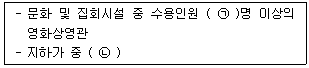
- ㉠ 50, ㉡ 터널
- ㉠ 50, ㉡ 지하상가
- ㉠ 100, ㉡ 터널
- ㉠ 100, ㉡ 지하상가
(정답률: 62%)
68. 옥내·외소화전설비의 수원의 기준 중 다음 ( )안에 알맞은 것은?
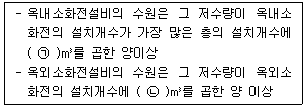
- ㉠ 1.6, ㉡ 2.6
- ㉠ 2.6, ㉡ 7
- ㉠ 7, ㉡ 2.6
- ㉠ 2.6, ㉡ 1.6
(정답률: 54%)
69. 청정소화약제소화설비(할로겐화합물 및 불활성기체소화설비)를 설치한 특정소방대상물 또는 그부분에 대한 자동폐쇄장치의 설치기준 중 다음 ( )안에 알맞은 것은?
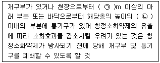
- ㉠ 1.5, ㉡ 1/3
- ㉠ 1.5, ㉡ 2/3
- ㉠ 1, ㉡ 1/3
- ㉠ 1, ㉡ 2/3
(정답률: 35%)
70. 포헤드의 설치기준 중 다음 ( )안에 알맞은 것은?
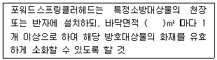
- 4
- 6
- 8
- 9
(정답률: 48%)
71. 연결살수설비 배관의 설치기준 중 옳은 것은?
- 연결살수설비 전용헤드를 사용하는 경우 하나의 배관에 부착하는 살수헤드의 개수가 2개이면 배관의 구경은 50mm 이상으로 설치하여야 한다.
- 옥내소화전설비가 설치된 경우 폐쇄형 헤드를 사용하는 연결살수설비의 주배관은 옥내소화전설비의 주배관에 접속하여야 한다.
- 개방형헤드를 사용하는 연결살수설비의 수평주행배관은 헤드를 향하여 상향으로 1/50 이상의 기울기로 설치하여야 한다.
- 가지배관을 설치하는 경우에는 가지배관의 배열은 토너먼트방식으로 하여야 한다.
(정답률: 53%)
72. 분말소화설비 가압용가스에 이산화탄소를 사용하는 것의 이산화탄소는 소화약제 1kg에 대하여 몇 g에 배관에 청소에 필요한 양을 가산한 양 이상으로 설치하여야 하는가?
- 10
- 15
- 20
- 40
(정답률: 54%)
73. 폐쇄형스프링클러헤드의 설치기준 중 다음 ( )안에 알맞은 것은?
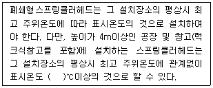
- 64
- 79
- 121
- 162
(정답률: 56%)
74. 소화수조 및 저수조의 전동기 또는 내연기관에 따른 펌프를 이용하는 가압송수장치의 설치기준 중 다음 ( )안에 알맞은 것은? (단, 수원의 수위가 펌프의 위치보다 높거나 수직회전축 펌프의 경우는 제외한다.)
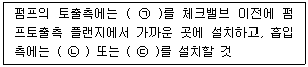
- ㉠ 압력계, ㉡ 연성계, ㉢ 진공계
- ㉠ 연성계, ㉡ 압력계, ㉢ 진공계
- ㉠ 진공계, ㉡ 압력계, ㉢ 연성계
- ㉠ 연성계, ㉡ 진공계, ㉢ 압력계
(정답률: 69%)
75. 연소방지설비를 설치하여야 하는 적용대상물의 기준 중 옳은 것은?
- 지하구(전력 또는 통신사업용인 것)
- 가스시설 중 지상에 노출된 탱크의 용량이 30톤 이상인 탱크시설
- 지하층(피난층으로 주된 출입구가 도로와 접한 경우는 제외)으로서 바닥면적의 합계가 150m2이상인 것
- 판매시설, 운수시설, 창고시설 중 물류터미널로서 해당 용도로 사용되는 부분의 바닥면적의 합계가 1000m2이상인 것
(정답률: 45%)
76. 완강기 및 간이완강기의 최대사용하중 기준은 몇 N 이상이어야 하는가?
- 800
- 1000
- 1200
- 1500
(정답률: 64%)
77. 상수도소화용수설비를 설치하여야 하는 특정소방대상물의 기준 중 다음 ( )안에 알맞은 것은?
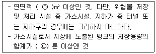
- ㉠ 5000, ㉡ 100
- ㉠ 5000, ㉡ 30
- ㉠ 1000, ㉡ 100
- ㉠ 1000, ㉡ 30
(정답률: 50%)
78. 미분무소화설비의 미분무헤드 설치기준 중 틀린 것은?
- 하나의 헤드까지의 수평거리 산정은 설계자가 제시하여야 한다.
- 미분무 설비에 사용되는 헤드는 표준형 헤드를 설치하여야 한다.
- 폐쇄형 미분무헤드는 그 설치장소의 평상시 최고주위온도에 따라 Ta=0.97Tm-27.3℃식에 따른 표시온도의 것으로 설치하여야 한다.
- 미분무헤드는 소방대상물의 천장·반자·천장과 반자사이·덕트·선반 기타 이와 유사한 부분에 설계자의 의도에 적합하도록 설치하여야 한다.
(정답률: 43%)
79. 특정소방대상물별 소화기구의 능력단위기준 중 옳은 것은? (단, 건축물의 주요구조부가 내화구조이고, 벽 및 반자의 실내에 면하는 부분이 불연재료·준불연재료 또는 난연재료로된 특정소방대상물인 경우이다.)
- 위락시설 : 해당 용도의 바닥면적 30m2마다 능력단위 1단위 이상
- 공연장 : 해당 용도의 바닥면적 50m2마다 능력단위 1단위 이상
- 의료시설 : 해당 용도의 바닥면적 100m2마다 능력단위 1단위 이상
- 노유자시설 : 해당 용도의 바닥면적 100m2마다 능력단위 1단위 이상
(정답률: 47%)
80. 분말소화설비 분말소화약제의 저장용기 설치기준 중 옳은 것은?
- 저장용기의 충전비는 0.7이상으로 할 것
- 저장용기에는 가압식은 최고사용압력의 0.8배 이하, 축압식은 용기의 내압시험압력의 1.8배이하의 압력에서 작동하는 안전밸브를 설치할 것
- 제3종 분말소화약제 저장용기의 내용적은(소화약제 1kg당 저장용기의 내용적)1L로 할 것
- 저장용기에는 저장용기의 내부압력이 설정압력으로 되었을 때 주밸브를 개방하는 압력조정기를 설치할 것
(정답률: 36%)